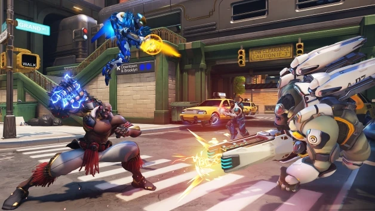

Todos nós alguma vez já passamos horas e horas em frente a um videogame com um jogo que nos entretia por horas, seja ele, de esporte, indie, ou até mesmo jogos que envolvem uma grande história que compõe sua lore. Contudo, dentre uma enorme diversidade de estilos e gostos, podemos considerar que sempre haverá um jogo que estará no coração de todos. E é essa a ideia que trouxemos aqui hoje, os melhores jogos de todos os tempos.
Nesse artigo, separamos alguns títulos que fizeram história na industria dos games:

Em 2015, a CD Projekt RED entregou aos jogadores uma obra-prima que transcendeu as expectativas: The Witcher 3: Wild Hunt. Este RPG de mundo aberto não apenas cativou os fãs da série, mas também atraiu uma nova legião de jogadores. Com uma narrativa envolvente, um vasto mundo para explorar e gráficos impressionantes, o jogo vendeu mais de 50 milhões de cópias, solidificando seu lugar entre os grandes e sendo considero por muitos o melhor RPG de todos os tempos.

Os jogos de tiro em primeira pessoa (FPS) conquistaram o coração de milhões de jogadores e graças ao seu cenário competitivo se tornou um dos mais populares gêneros entre os jogados. Overwatch, desenvolvido pela Blizzard Entertainment e lançado em 2016, não foi exceção. Com uma mistura única de personagens carismáticos, jogabilidade intensa e um foco forte na experiência multiplayer, Overwatch ultrapassou a marca de 50 milhões de cópias vendidas, consolidando-se como um dos jogos mais vendidos da era moderna.
Desenvolvido pela Rockstar Games, Red Dead Redemption 2 é um épico de ação no Velho Oeste que conquistou os fãs de jogos em todo o mundo. Lançado em 2018, este jogo de mundo aberto oferece uma experiência imersiva e emocional. Com mais de 55 milhões de cópias vendidas, Red Dead Redemption 2 não apenas estabeleceu novos padrões para jogos de mundo aberto, mas também se tornou um clássico instantâneo e é tido como a obra-prima máxima da Rockstar até o momento, superando até mesmo um outro jogo que aparecerá nessa lista…